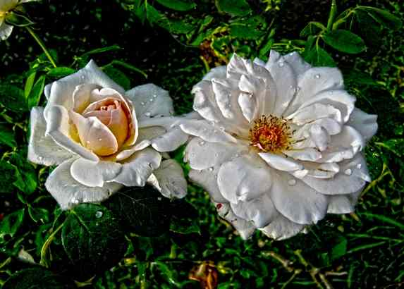
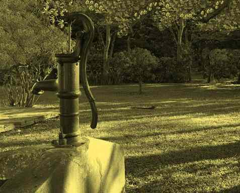
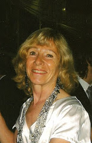

“Los cascabeles de mi risa”
María Griselda García Cuerva (Argentina) |
Por "Vida Reflexion", Graciela María Casartelli |
Mi corazón celebra/la magia de la poesía, |
Hechizada por la magia de la naturaleza, María Griselda transcurre su existencia proyectándose, en todo lo bello que aquélla le permite plasmar y lo hace La vida en todas sus formas, le ofrece “vida” a su “vida”: el cosmos, los paisajes, los animales, las relaciones humanas benignas; como la familia y las amistades… |
 |
Sus progenitores dejaron una huella indeleble en este transcurrir; permitiéndole apreciar como herencia cuidadosa, una escala de valores trascendentes
que con benignidad,
marcaron
el paso de sus años.
-En mis sueños veo/una gran cantidad de lugares hermosos,
que tienen una amplia gama de colores…/La gente habla en voz baja,
no hay violencia/no luchan/y viven en paz-*
“Soy una persona de buen carácter, rechazo absolutamente la violencia, no me gustan las discusiones, creo que todo se puede arreglar hablando civilizadamente.
Tampoco me gusta la intolerancia, la mentira ni la irresponsabilidad.”
Perdió ambos padres, con una diferencia de dos años, lo que marcó un hito en sus recuerdos y creación poética-artística, en la búsqueda
de aquellos tiempos de infancia:
Un imaginario, que la proyectaría en infinitas luces, marcando el sino de su destino.
-El arrullo de sus voces /me acaricia el alma/los sueños se dirigen/al paraíso de mi infancia.”*
-Aquellos días eran largos/y colmados de angustia…Una madrugada de Octubre/
te marchaste silenciosamente/en medio de la oscuridad/ ¡cómo te extraño, papá!-*
-¡Qué lindo era compartir estos momentos con la familia! El amor nos nutría el alma y mi alegría estaba colmada de lucecitas de colores,
la inocencia salpicaba mis pensamientos…-*
-El color de la inocencia/ pinta los caminos/brota la dulzura/estremeciendo la piel.-*
 |
Y dentro de ése, “su mundo”, está su abuela y aquellos seres significativos de la primera edad. -y un pedacito de mi niñez/florece en un rincón. /Me siento sobre su falda |
-Ahora estaba de nuevo allí, sabía que Juan había fallecido hacía 2 años pero venía a visitar a María, quien, según me habían informado,
tenía dificultad para caminar…, me temblaban las piernas y transpiraban mis manos….una señora que pasaba por la vereda me dijo que
María había muerto la semana anterior…¿Por qué no me esperaste, María?-*
Asimismo, la relación con el entorno, es una mágica luz que colorea la existencia, conformando el universo y llenándolo de rubores y de fe…
-los sentimientos de amor/se encienden en mi pecho/En el horizonte se refleja/
la luz de mis emociones-*
-Mis pupilas se encienden/con la luz de la luna…/Una lluvia de estrellas/se derrama en el aire…El misterio se oculta/entre las frías sombras… -*
-Me convierto en un ave/y vuelo hacia un lucero/para cumplir mis sueños/en la quietud de la noche.-*
-El brillo del verano/perdura en mi espíritu / -(XII)/y la lluvia furiosa
las baña con su llanto. /La oscuridad del cielo/penetra en la soledad-*
Y, finalmente, el amor juvenil que se posó en una rama de su frondoso árbol y como ave solitaria, mudó en abandono; trastocando
el desierto en búsqueda de lo trascendente:
-…Los recuerdos solitarios vuelan/y en su viaje nostálgico/cruzan algunos pájaros
que buscan otro destino….-*
-La joven se deleita/con la dulce primavera/el brillo de la vida/resplandece en su sonrisa-*
-regresa contagiando su alegría/y habla con la oscura noche/que siempre lo acompaña
en la soledad….- *
-y un abanico de amor/se despliega en (su) mi vida.-*
Los caminos eran floridos
|
Ways were flowery
|
 |
“Nací y vivo en Dolores, provincia de Buenos Aires (Argentina). |
Las fotografías exhibidas aquí son obras de María Griselda García Cuerva.
http://magrigarliterata.blogspot.com.ar/
Referencias:(*)
http://www.haciendoalmas.cult.cu/2010/10/18/sentimiento-primaveral-17-10-10/
http://magrigarliterata.blogspot.com.ar/
El recuerdo de mis padres/http://argentinoenusa.com/read-630.html)
http://argentinoenusa.com/read-716.html
“Querida infancia” http://magrigarliterata.blogspot.com.ar/
http://sadedolores.blogspot.com.ar/2009/11/cuatro-poemas-de-griselda-garcia-cuerva.html
http://www.poetasdelmundo.com/detalle-poetas.php?id=799)
http://magrigarliterata.blogspot.com.ar/
http://mensajera9017.blogspot.com.ar/2007/08/atardecer-en-la-laguna.html
(De hechizos nocturnos) http://www.poetasdelmundo.com/detalle-poetas.php?id=799
(La quietud de la noche) http://www.poetasdelmundo.com/detalle-poetas.php?id=799
http://www.poetasdelmundo.com/detalle-poetas.php?id=799
(Una noche tormentosa)http://concienciapoetica.blogspot.com.ar/2007/06/de-maria-griselda-garcia-cuerva-para-el.html
Las caricias de la naturaleza/ http://concienciapoetica.blogspot.com.ar/2007/06/de-maria-griselda-garcia-cuerva-para-el.html
Brillo primaveral/ http://lamaqdeescribir.blogspot.com.ar/2007/11/mara-griselda-garca-cuerva-brillo.html
(El loco)http://argentinoenusa.com/read-373.html
(El brillo del verano) http://argentinoenusa.com/read-347.html
Musicalización: A love song (mid)